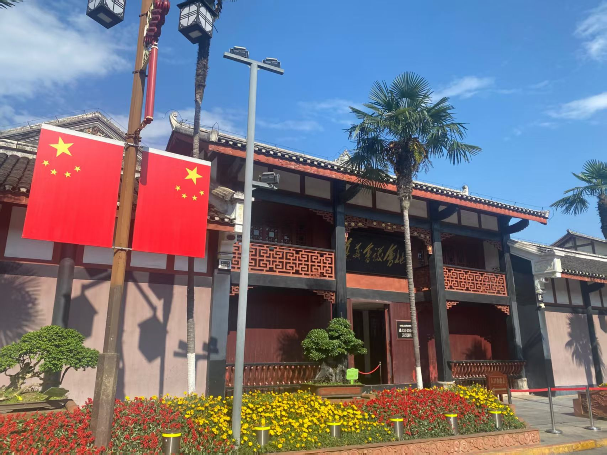

预约与用时
馆区共两层，建议预留充足时间，依次参观一楼大厅、左侧展厅、遵义会议展区、四渡赤水展区和二楼长征主题展。

景点指南 · 深度游览
从一楼大厅到二楼长征主题特展，沿时间线读懂遵义会议的伟大转折与长征精神。
会址及纪念馆通过历史图片、文物、油画、雕塑、幻影成像与半景画等形式，串联长征背景、遵义会议、四渡赤水及后续长征历程。馆内路线标识明确，适合按时间线参观。
馆区共两层，建议预留充足时间，依次参观一楼大厅、左侧展厅、遵义会议展区、四渡赤水展区和二楼长征主题展。
文案未提供交通信息；可结合实际出行安排，将附近红色遗址、故居一并纳入参观路线。
上二楼后可先参观右侧展馆；参观途中若感到疲劳，可在二楼回廊座椅处休息。